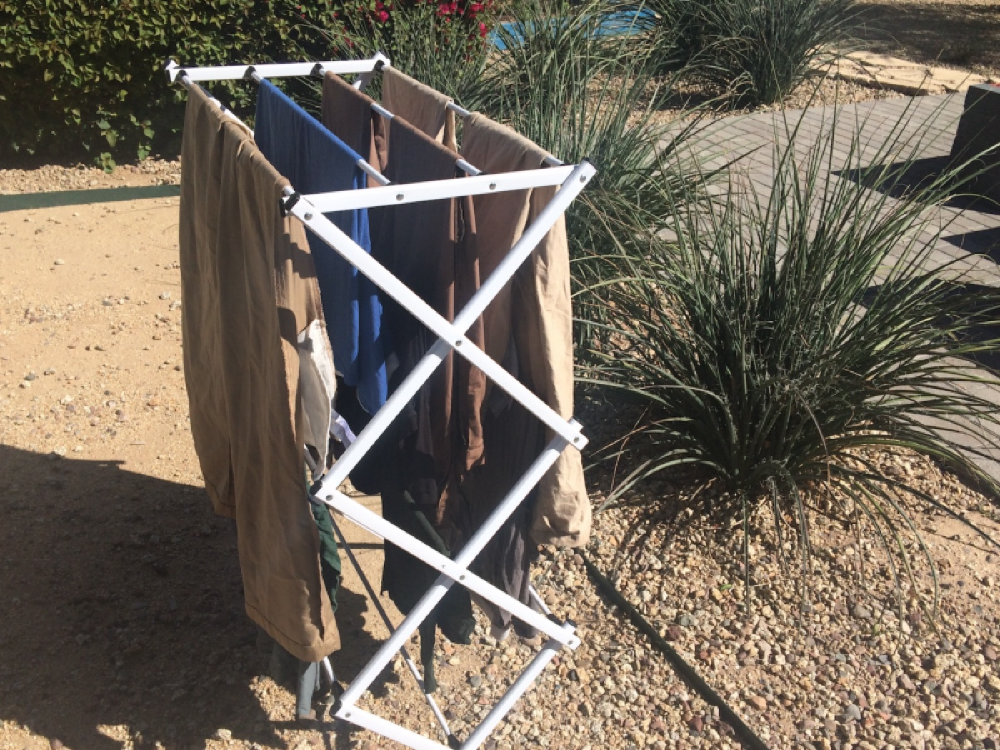

March 20, 2018
Staying Green in the Brown Desert – Tip #1

Staying Green in a Brown Desert – Tip #1
Today’s post is first in a series from Evan Gorelick (Finley’s cousin) and his fiancé Katie O’Connell who moved to Phoenix, AZ in 2017. Staying green in the brown desert — known for its lack of natural water — hasn’t been easy. But they’ve found ways to make it work. Here’s their first tip!
Phoenix, Arizona is the sunniest major city in the world. Only three inhabited places on earth—Yuma, Arizona; Marsa Alam, Egypt, and Egypt’s Dakhla Oasis—get more hours of sunshine. All that sunshine brings with it an enormous amount of power. While institutions like Arizona State University in Tempe develop better ways to convert solar power into electricity, there are ways for all of us to directly harness the sun’s awesome power.
Evan and Katie use two drying racks to dry their laundry. By using the (free and clean) power of the desert sun instead of running the dryer, they avoid burning about 2 pounds of coal with each load of laundry. Over the course of a year, this adds up to over 230 pounds of coal, as well as a few hundred extra dollars in their pocket!